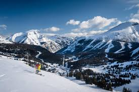
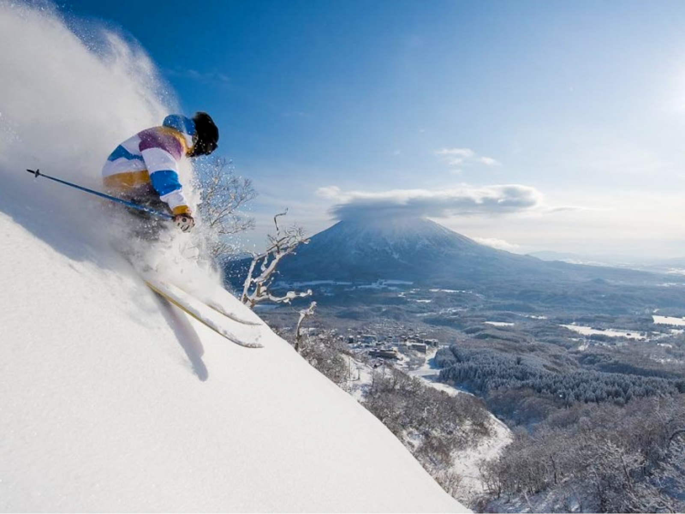

The Alps (Europe)

The Alps are a beautiful mountain range located in Europe. This snow capped mountain range spans across 8 countries,
including France, Switzerland, Italy and Austria. The Alps offer an incredibly unique skiing experience due to its
very bare looking nature. Unlike many other skiing locations, the Alps have a large absence of trees, giving the skier
breathtaking views and a large margin of freedom to ski through. The Alps are also famous for its intensely long
ski runs, some spanning for miles. The Alps are a unique and incredible location that every skier should one day visit.
The Rockies (North America)

The Rocky Mountains are an enormous mountain range that spans through the western United States and Canada. The Rocky Mountains
or "the Rockies" are famous for its variety of extreme and friendly terrain. The Rockies have dense forests giving
many skiers the thrill of back country skiing. The Rockies also have many well known ski resorts such as Vail,
Aspen and Whistler. This mountain range has beautiful views and intense snowfall providing a long winter season. The
Rockies should be seen by every skier.
Pacific (Japan)

Japan is very famous for its heavy snowfall and incredibly light and dry powder. The light powder offers some of
the best powder skiing in the world. Skiers can experience the feeling of flying through the light powder with a weightless
sensation, a feeling that is extremely difficult to find around the world. Japan is also very famous for its unique culture
which can make its way to the ski resorts. Japan offers many unique natural phenomena such as natural hot springs, beautiful trees
and intense snowfall from Siberia. Japan offers a whole variety of terrain types, friendly to all types of skiers. Japan’s
beautiful powder, scenery and culture is a must see for every skier.